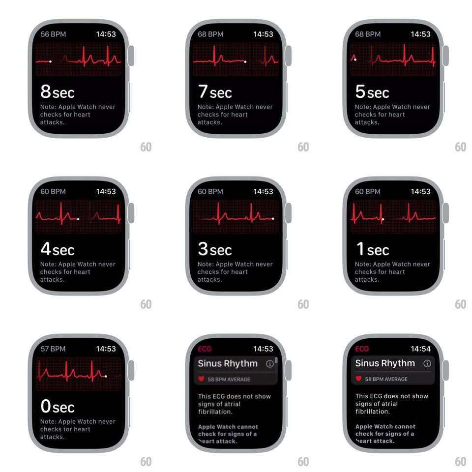

Media
Frame-by-frame

Rebuild this interaction 1:1: the Apple Watch ECG recording - a red waveform draws continuously across a dotted grid as the seconds counter ticks down from 9 and the live BPM updates top-left, and at 0 the whole graph blurs and fades into the "Sinus Rhythm" results screen.

Rebuild this interaction 1:1: the Apple Watch ECG recording - a red waveform draws continuously across a dotted grid as the seconds counter ticks down from 9 and the live BPM updates top-left, and at 0 the whole graph blurs and fades into the "Sinus Rhythm" results screen. ## Integration Integration: stack-agnostic spec - springs given as stiffness/damping, timed motions as duration + curve; map every value to your framework and animation library of choice. ## Scene Apple Watch ECG measurement: "N BPM" top-left, time top-right, the live trace on a dotted grid, big "N sec" counter and the "Apple Watch never checks for heart attacks" note below. Results screen: "Sinus Rhythm", average BPM chip, explanation text. ## Motion spec Pattern: real-time trace with blur-out transition. - The ECG line draws left to right at constant speed (~25mm/s equivalent), QRS spikes rising sharply with a glowing white leading dot; the oldest trace scrolls off the left edge. - BPM top-left updates with each detected beat (value crossfade 200ms); the seconds counter ticks down each second (no animation on the digit, just the value). - At 0 sec: the trace holds one beat, then the entire graph layer blurs (radius 0 -> 20px, ~400ms) and fades while the results screen fades in beneath it (300ms overlap). - Results: "Sinus Rhythm" header with info icon, red heart chip with average BPM, then body copy - staggered fade-in (~100ms apart). ## Calibration - Spike morphology matters: small P wave, sharp tall QRS, gentle T wave - not a sine wave. - The blur-out is the transition: no slide, no cut between measurement and results. ## Reduced motion Trace still draws (it is data), but the transition is a simple crossfade (200ms). ## Don't miss - The countdown reaches 0 and stops - it never goes negative. - The results screen replaces the note text area too - nothing from the measurement layout persists.